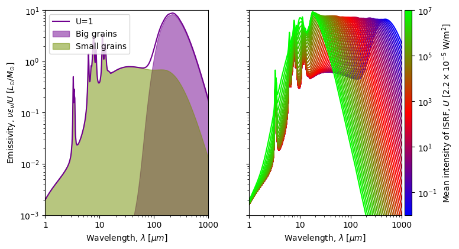
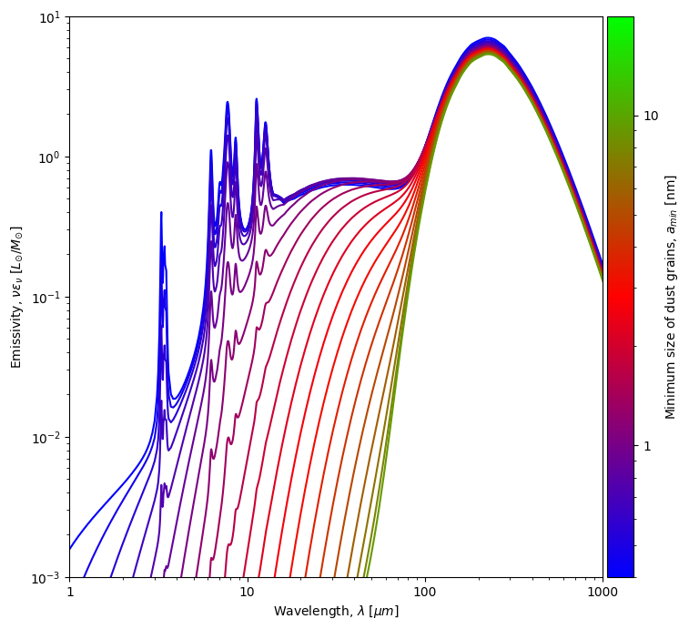

Idea
Modeling thermal grain emission is an unavoidable tool to study the physics of the interstellar medium. Modeling this emission usually relies on sampling dust emission models. For example, MCMC Bayesian models rely on interpolating large grids of pre-computed dust emission models in their quest to fit the dust emission spectral energy distribution. Most often, increasing the model's complexity; i.e increasing the number of its modeling parameters, comes at the expense of larger grids and fits. Scalibility obstacles can be tamed by training a statisical estimator to approximate the model and to sample the model-space.The heating and cooling of interstellar dust is controlled by the absorption and re-emission of electromagnetic radiation from the interstellar radiation field (ISRF). The interaction of an electromagnetic wave with a dust grain results in its fractional absorption as heat, and ulteriorly, its re-emission in the infra-red. This dynamics is governed by the interplay of two timescales, the absorption time, \(\tau_{abs}\), the average time between two photon absorptions, and the cooling rate, \(\tau_{cool}\), the average cooling time.

Spectral energy distributions of the interstellar radiation field (ISRF) as provided by the BPASS model for a stellar metallicty of Z = 0.004 dex, age range 1 Myr \( \leq\tau\leq\) 10 Gyr, and mean intensity U=1. The energy distribution of young stellar population with massive stars dominate in the ultra-violet range compared to infra-red for older populations |
The absorption time, \(\tau_{abs}\), is inversely proportional to grain size: as the grain gets larger, it intercepts more photons. Whereas the cooling time, \(\tau_{cool}\), is inversely proportional to the temperature and is independent of grain size. The hotter the grain is, the more energetic the absorbed photon is, the faster its dissipation is. Therefore, out-of-equilibrium grains are smaller grains and spend most of their time at low temperatures, whereas, large grains tend to be in thermal equilibrium. The total emission at a specific time is a sum of the emissions of all the individual grains of different sizes and different temperatures.
|

An increase in the intensity, U, of the insterstellar radiation
field brings about a shift of the emission peak of big grains
closer to the mid-infrared range, consequently resulting in higher
equilibrium temperatures, \(T_{eq}\).
Older stellar population predominantly contain low-mass stars. Emission from massive stars (O-B) peak in the UV. Emission from low-mass stars peak in the NIR.  Increasing the minimal size of grains lowers the small-grain component of dust emission. |

Implementation
We train a neural-network to emulate the dust emission spectra of a THEMIS dust model, by training it on emission as calculated by SwING (SoftWares for Investigating Nebulae and Galaxies) written by F. Galliano adapted to use the stellar evolution model and libraries of synthetic atmosphere spectra grids BPASS for modeling the interstellar radiation field. The model is trained on a large grid of models by varying three parameters: the mean power of the interstellar radiation field, \(U\), the age of the stars in the population \(\tau\), and the minimal size of dust grains considered for the THEMIS model, \(a_{min}\). The dataset that was generated constitutes a large models grid of three parameters, the intensity of the interstellar radiation field, its population age, and the minimal size of grains. We set ranges for each parameter spanning over values of interest to interstellar medium (ISD) studies. In total, our dataset will comprise 51 \(\times\) 51 \(\times\) 91 = 236691 model dust emission spectra